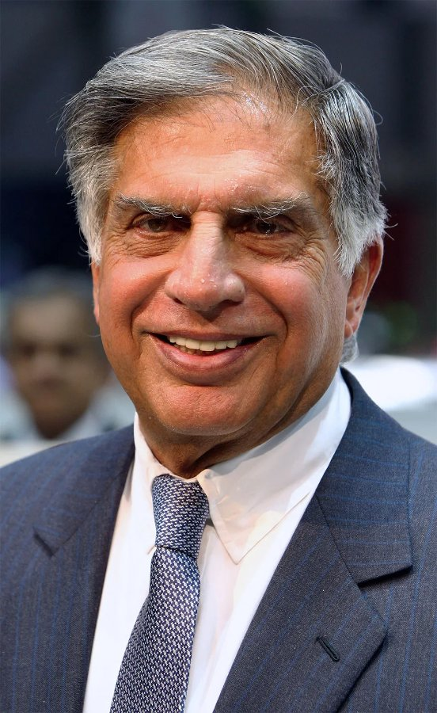

← Back to the founder directory

Ratan Tata
The architect-turned-industrialist who led the Tata Group for 21 years, took it global, and spent his later years backing young founders and a range of charitable causes.
- Born
- 28 December 1937, Bombay (now Mumbai), India
- Died
- 9 October 2024, Mumbai, aged 86
- Known for
- Chairman of Tata Sons (1991–2012); Chairman Emeritus
- Education
- B.Arch, Cornell University (1962); Harvard Business School AMP (1975)
Early life
Ratan Tata was born in Bombay in 1937 into the Parsi Tata family, the son of Naval and Soonoo Tata. His parents separated when he was ten, and he and his younger brother Jimmy were brought up by their grandmother, Navajbai Tata. He has described himself as a shy boy who never got over a fear of public speaking. He went to school in Mumbai and Shimla and finished high school in New York in 1955.
Cornell and a first job in Los Angeles
He studied at Cornell University from 1955 to 1962, starting in engineering to please his father and then switching to architecture, and he graduated with a bachelor's degree in architecture. He liked life in America and worked at an architecture firm in Los Angeles. He returned to India in 1962, when his grandmother's health declined. He has said he would happily have stayed in California.
Joining the Tata Group
Back in India he had a job offer from IBM, but JRD Tata, who then led the group, asked him to join the Tata companies instead. He joined in 1962 and trained on the shop floor at Tata Steel in Jamshedpur. In 1971 he was put in charge of National Radio and Electronics (Nelco), a struggling electronics company. He did well at first, but a later economic slowdown undid much of the progress. He joined the board of Tata Sons in 1974, completed Harvard's Advanced Management Program in 1975, became chairman of Tata Industries in 1981 and chaired Air India from 1986 to 1989.
Becoming chairman
On 25 March 1991 he took over from JRD Tata as chairman of Tata Sons, just as India was opening up its economy. Many people saw him as an accidental choice who owed the job to his surname. The heads of the group's companies, who had run them very independently, pushed back. He introduced a retirement age, had the companies report to the group centre, asked them to contribute to building the shared Tata brand, and exited unrelated businesses.
Taking Tata global
Under his leadership the group made a series of large overseas acquisitions: Tetley tea (2000), Corus steel (2007) and Jaguar Land Rover (2008). By the end of his tenure more than 65% of group revenue came from outside India. Wikipedia reports that revenue grew more than 40 times over his 21 years, and Tata Steel's profile puts it at over US$100 billion in 2011–12. He also backed homegrown products, including the Tata Indica car in 1998 and the low-cost Tata Nano, unveiled in 2008 and sold from 2009.
Setbacks and criticism
Not everything worked. The Nano did not sell as hoped and was eventually discontinued, and the Corus deal, done near the top of the steel cycle, weighed on Tata Steel for years. After he stepped down in December 2012 at 75, Cyrus Mistry became chairman. In October 2016 the Tata Sons board removed Mistry, and Ratan Tata returned as interim chairman until N. Chandrasekaran took over in February 2017. The dispute went through the courts, and the Supreme Court later upheld Mistry's removal. It was one of the most public disputes in the group's history.
The Taj attack and giving
After the November 2008 attack on the Taj Mahal Palace Hotel in Mumbai, Tata worked to restore the hotel and to support the families of the people who died, and he visited the families himself. Tata Trusts, which hold about two-thirds of Tata Sons, funded work in health, education and rural development. He backed major gifts to Cornell and Harvard, and the Trusts supported cancer care, science and technology centres at IIT Bombay and MIT, and research on Alzheimer's disease.
Backing startups
From about 2014 he began investing in startups, mostly in his personal capacity and through his firm RNT Capital Advisors. Wikipedia counts more than 40 companies, including Snapdeal, Ola, Paytm, Xiaomi, Teabox, CashKaro and Nestaway. In 2022 he launched Goodfellows, a companionship startup for older people, with his young mentee Shantanu Naidu.
Personal life and death
Tata never married. He once said he came close four times but backed away. He lived simply, loved cars, flying and his dogs, and in 2024 he was involved with a small-animal hospital in Mumbai. He died in Mumbai on 9 October 2024, and a state funeral was held the next day. His will made provision for family, friends, staff, his dog and the Ratan Tata Endowment Foundation, which he set up in 2022.
Timeline
- 1937Born in Bombay.
- 1962Graduates from Cornell and joins the Tata Group.
- 1971Put in charge of Nelco.
- 1975Completes Harvard's Advanced Management Program.
- 1991Becomes chairman of Tata Sons.
- 2000Tata Tea acquires Tetley.
- 2007–08Tata Steel buys Corus and Tata Motors buys Jaguar Land Rover.
- 2008Receives the Padma Vibhushan; the Nano is unveiled.
- 2012Steps down as chairman at 75 and becomes Chairman Emeritus.
- 2016Returns as interim chairman for about four months.
- 2024Dies in Mumbai on 9 October.
Recognition
- Padma Bhushan (2000) and Padma Vibhushan (2008)
- Honorary Knight Grand Cross of the Order of the British Empire (2014)
- Commander of the Legion of Honour, France (2016)
- Honorary Officer of the Order of Australia (2023)
- Honorary doctorates from many universities in India and abroad
Leadership lessons
- Do the work before the job. He started on a steel plant floor, not in the boardroom.
- Widen the map without changing the compass. The group went global while keeping its values.
- Take big swings, and own the misses. The Nano and Corus show the risks of ambition.
- Know when to step aside. He left at 75 and later helped steady the group in 2016.
- Back the next generation. His later years went into young founders and causes he cared about.
Sources
Written from public information, including Wikipedia, the Tata group's profile, Tata Steel and CEO.wiki. I could not open the Livemint timeline, so it is not used. The sources disagree on some details, such as the Nano's launch year (unveiled 2008, sold from 2009) and the group's revenue growth, so the Tata group's own account and Wikipedia are followed where they differ. The Tata Steel page was written before his death and is used only for his career details. Net worth is left out because estimates conflict.